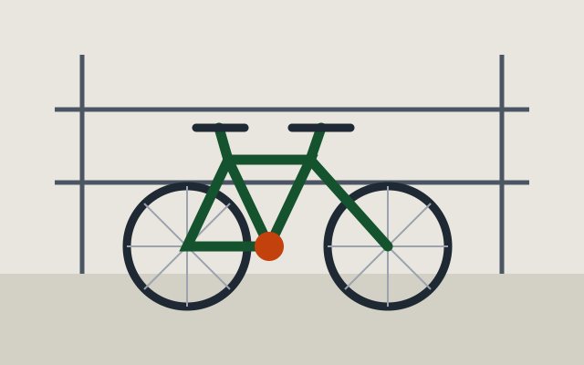

Przegląd sezonowy
Regulacja przerzutek i hamulców, kontrola łańcucha, smarowanie i sprawdzenie ciśnienia. Po przeglądzie dostajesz listę zużytych części.
Przegląd, naprawa i sezonowy serwis rowerów. Zostawiasz rower rano, odbierasz po południu.
Umów przegląd
Regulacja przerzutek i hamulców, kontrola łańcucha, smarowanie i sprawdzenie ciśnienia. Po przeglądzie dostajesz listę zużytych części.

Centrowanie kół, wymiana szprych, naprawa dętek i opon. Koła centrujemy ręcznie, na warsztatowym centrowniku.

Diagnostyka silnika i kontrolera, pomiar pojemności baterii, aktualizacja oprogramowania napędu. Obsługujemy najpopularniejsze systemy napędowe.
Serwis rowerowy Szprycha
ul. Warsztatowa 7
33-230 Szczucin
Telefon: 14 000 00 00
E-mail: serwis@szprycha.example
poniedziałek – piątek: 9:00 – 18:00
sobota: 9:00 – 13:00
niedziela: nieczynne